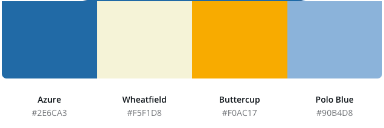

Chosen Color Scheme
The primary colors will be Azure, Wheatfield, Buttercup and Polo Blue. Shades of these colors will be used for the background, text, links, accent, highlights, and logos of the sunidaho.com website. An example of how these colors can be used in the site can be seen in the layout of this page.